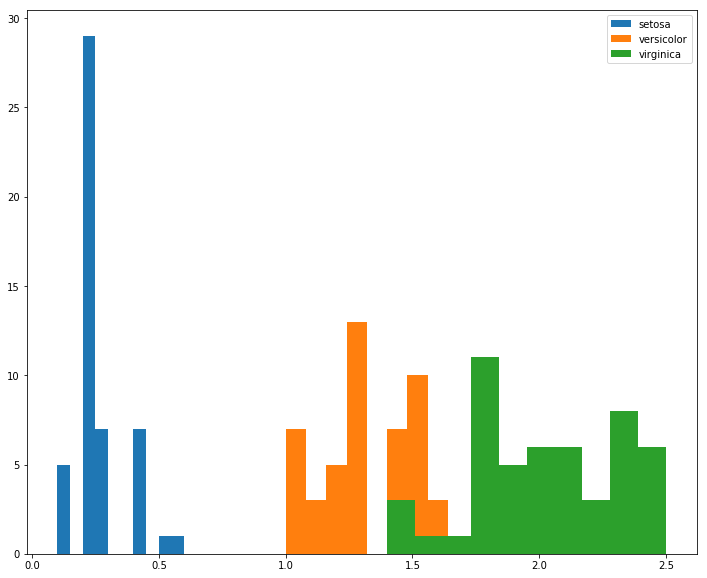
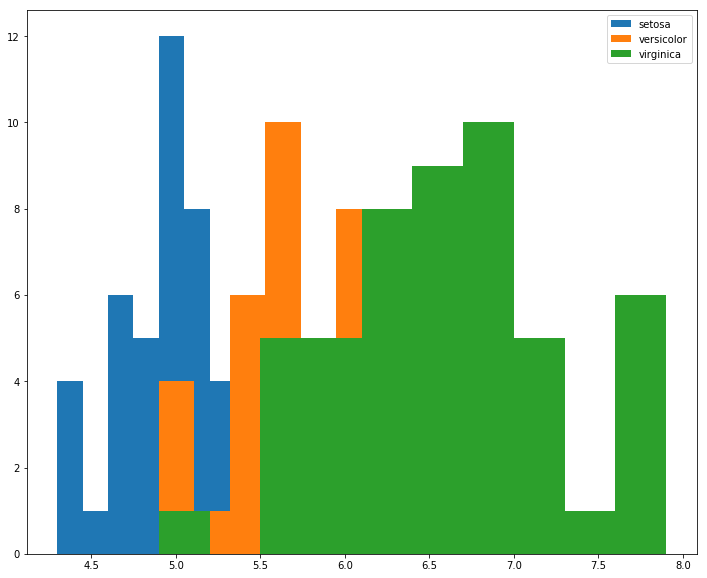
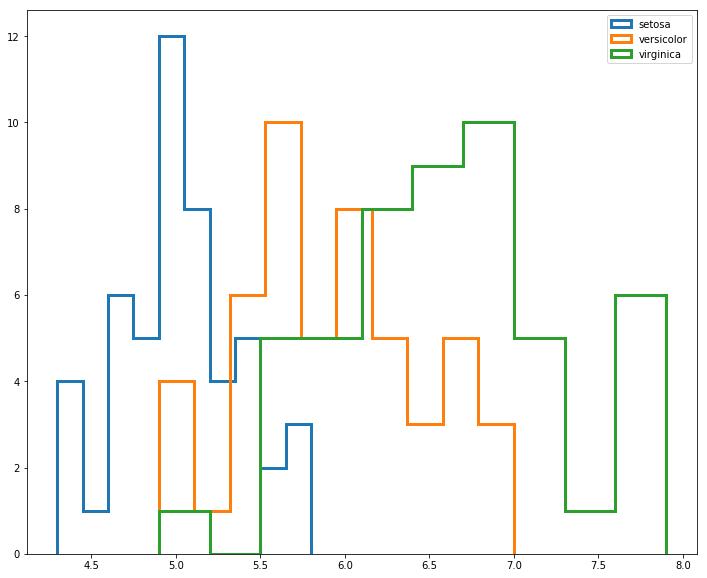
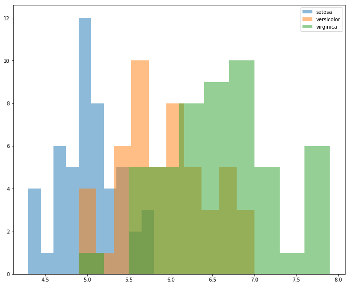

Histogram Tricks for Comparing Classes
Looking at the different distributions of features between various classes is the first step in building any sort of classifier. However, even univariate analysis can lead to some cluttered visualizations fore more than a couple of different classes.
Example
We’ll load up our old, reliable Iris Dataset
%pylab inline
import pandas as pd
from sklearn.datasets import load_iris
data = load_iris()
df = pd.DataFrame(data['data'], columns=data['feature_names'])Populating the interactive namespace from numpy and matplotlib
Map the 0, 1, 2 into actual flower names.
mapping = {num: flower
for num, flower
in enumerate(data['target_names'])}
flowers = pd.Series(data['target'], name='flower').map(mapping)Then build out an iterator we can use to cycle through DataFrames by flower class
gb = df.groupby(flowers)So for a feature like petal width, the separation is pretty straight-forward. I’d ship this.
fig, ax = plt.subplots(figsize=(12, 10))
for idx, group in gb:
ax.hist(group['petal width (cm)'], label=idx)
ax.legend();
However, if we instead look at sepal length, there’s more overlap between class distributions, and due to rendering order, it’s not obvious what’s happening to versicolor in the [6.0, 7.0] range.
fig, ax = plt.subplots(figsize=(12, 10))
for idx, group in gb:
ax.hist(group['sepal length (cm)'], label=idx)
ax.legend();
For this, we might consider using the histtype='step' argument to un-shade the area beneath the bars
fig, ax = plt.subplots(figsize=(12, 10))
for idx, group in gb:
ax.hist(group['sepal length (cm)'], histtype='step', linewidth=3, label=idx)
ax.legend();
But this still looks a bit crowded.
Worth pointing out, however, that this technique can be extremely valueable when looking at two different classes of similar distributions, such as the one outlined in hundredblocks’ book on ML Applications.
from IPython.display import Image
Image('images/dual_hist.PNG')
For this, I’d probably just ratched down the value of alpha argument. But it’s easy to see how the introduction of another class or two would really make this a mess.
fig, ax = plt.subplots(figsize=(12, 10))
for idx, group in gb:
ax.hist(group['sepal length (cm)'], alpha=.5, label=idx)
ax.legend();
In the case that I have more than 3 or so classes, I think I’d opt to put each class on its own histogram, taking great care to remember to utilize the sharex=True argument so I can meaningfully compare their distributions
# to keep the same color scheme
colors = mpl.cm.get_cmap('tab10').colors
N_CLASSES = 3
fig, axes = plt.subplots(N_CLASSES, 1, figsize=(12, 10), sharex=True)
for ax, (idx, group), color in zip(axes, gb, colors):
ax.hist(group['sepal length (cm)'], label=idx, color=color)
ax.legend();